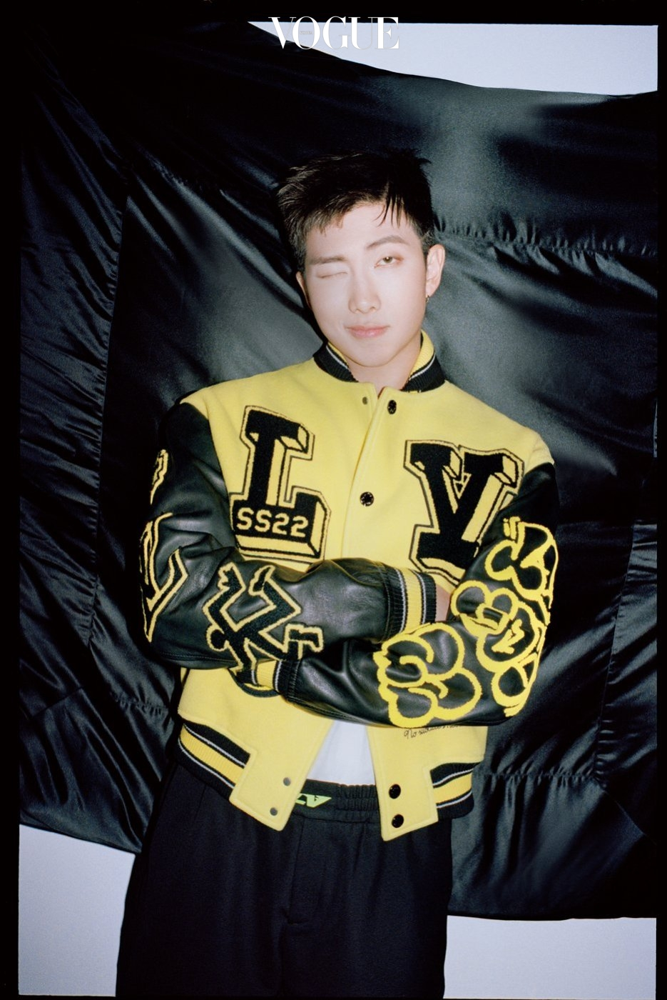
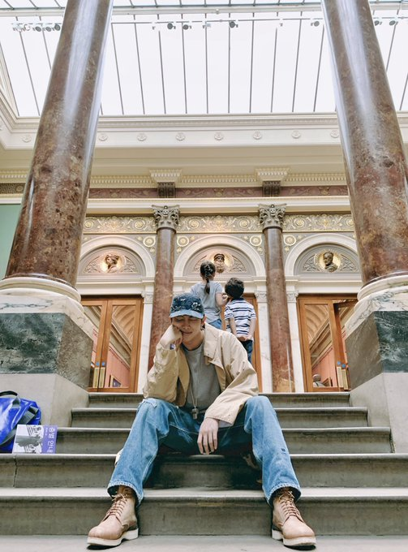
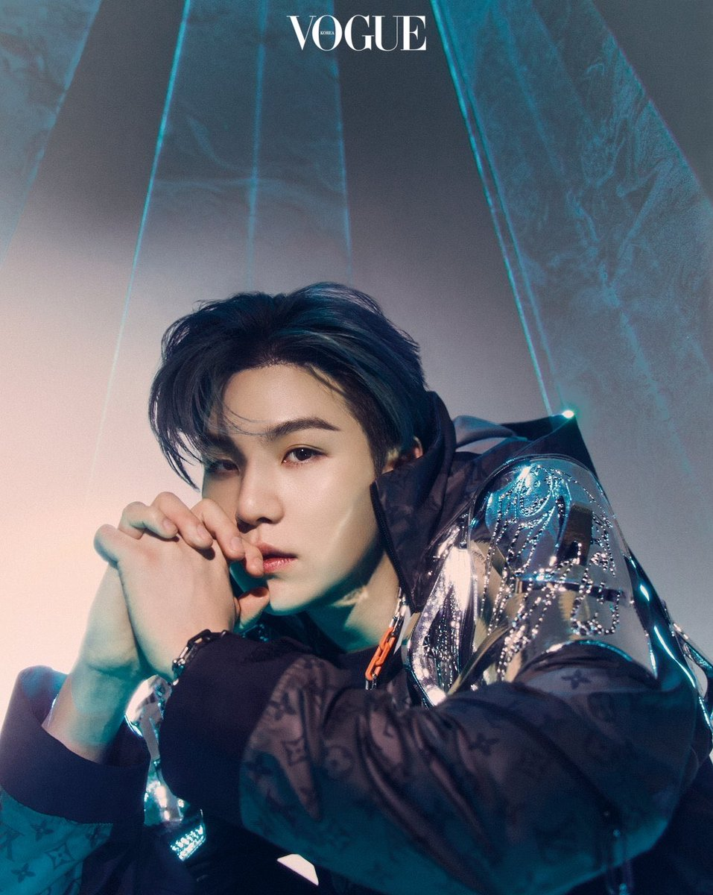
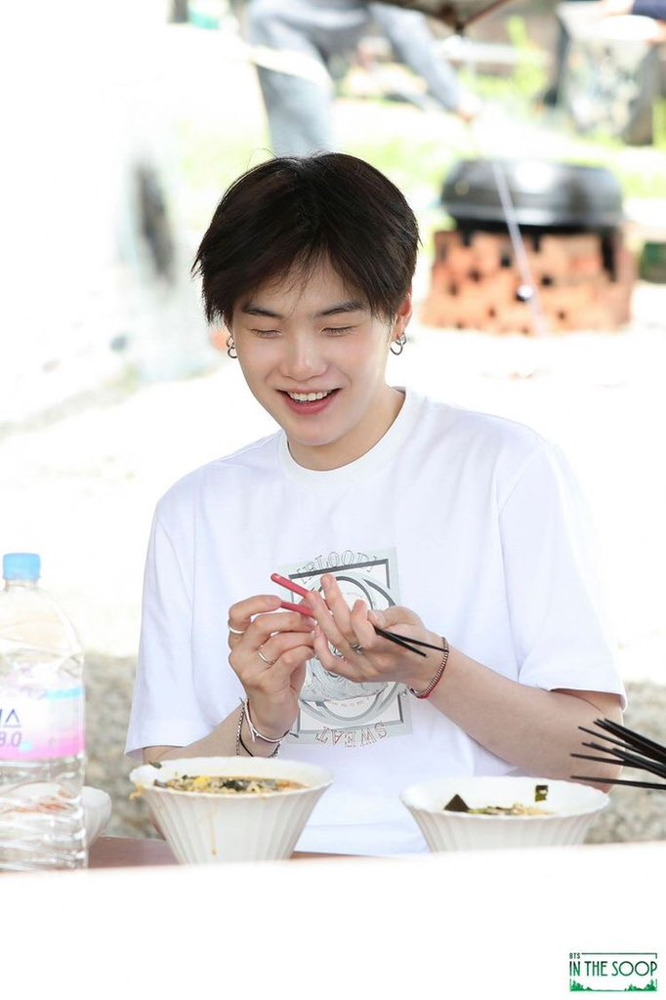
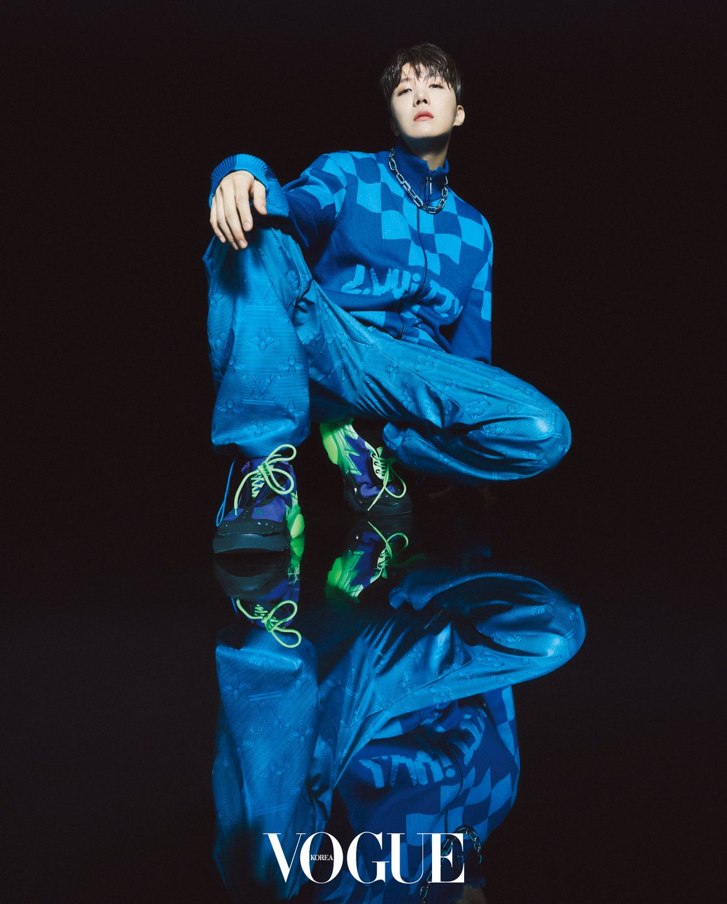
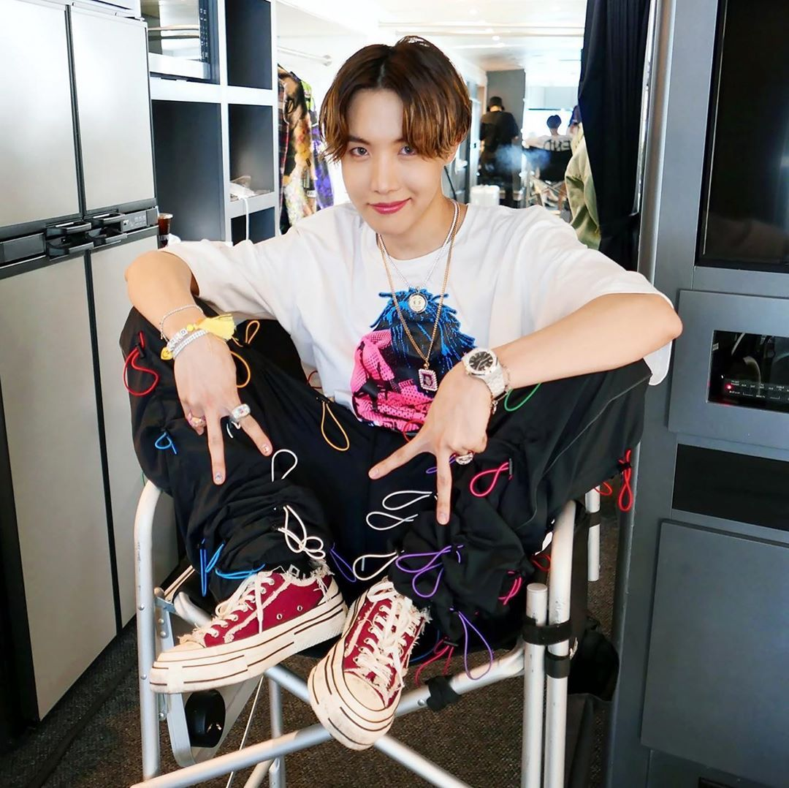

BTS' rap line consists of members RM, SUGA and J-Hope. The three of them also happen to be the lyricists and producers of most of BTS' songs.
RM is regarded as the gifted lyricist of the group, with his songs having a poetry-like feel to them. SUGA is a lyricist as well but is better known for his producing abilities, having helped composed many of the group's and other famous artists' hits. Lastly, J-Hope is considered one of the most versatile members given his rapping, singing and especially his dancing skills.
RM (Kim Nam-joon)

Born 12th September, 1994, RM is BTS' leader and first member. He started out as an underground rapper under the name Runch Randa when he was still
in middle school. Upon his increasing popularity, he was introduced to BigHit's founder Bang Shi Hyuk and ultimately joined the agency in 2010. A large part of BTS' success
and creation is attributed to RM. From co-writing most of the group's songs to being the leader and primary spokesperson for the group as the only
fluent English speaker, RM has been an instrumental figure in BTS.

While RM's talents are many from rapping to writing lyrics, his biggest passion is Art. He has often stated that the thing that brings him most joy in
the world is going to art galleries and museums. In addition, he has expressed his love for bicyling and reading as well, which are all interests that line
up with his calm, confident and comforting desposition.
Fun fact: RM has an IQ of 148, which falls under the genius category!
SUGA (Min Yoon-gi)

Born 9th March, 1993, SUGA is deemed as the musical genius of the group. SUGA found his passion in music at a young age, writing and producing songs at age 13. In highschool,
he started rapping under the name "Gloss", eventually taking part in a BigHit competition and placing 2nd. He joined the company
as a producer, never intending to pursue a career in rap, but was later asked to join the company's new hip-hop group, which went on to become BTS. SUGA not only is one of the fastest Korean rappers,
but he also produces music for BTS and collabortates with other artists like Halsey, Juice WRLD and IU (Korean soloist) to name a few.

SUGA is known for his patience, wit and dry sense of humor. He has also gained a reputation for being able to tell the future, having prophesized many of the group's
achievements years before they took place. Apart from music, he is passionate about basketball (his stage name SUGA comes from the word "shooting-guard").
Fun fact: He releases solo music under his alter ego "Agust D" & is the first male solo act to have both an album and single with iTunes #1 in 100 countries.
J-Hope (Jung Ho-seok)

Born 18th February, 1994, J-Hope is one of BTS' aces, being a rapper, dancer, producer and sub-vocalist. Having never rapped before joining the group, J-Hope had been set on a career in dance. Joining a dance
crew in his early teenage years, he was encouraged to audition to K-Pop music agencies. After being impressed with his dance skills, BigHit accepted him in the hopes of him being
a potential rapper. With RM and SUGA's help, J-Hope trained to become BTS' third rapper. Currently, not only does he rap and help with producing the group's songs he is also the dance leader for BTS.

While J-Hope's passion lies in dancing, he has gained a huge fan following for his fashion sense. His unique sense of aesthtic has also led to him collecting figurines like the famous KAWS dolls and Murakami art.
In terms of his personality, he's best known for his cheery and outgoing nature.
Fun fact: J-Hope for featured in Drake's "In My Feelings" music video and his video for the challenge was the most liked tweet of 2018.